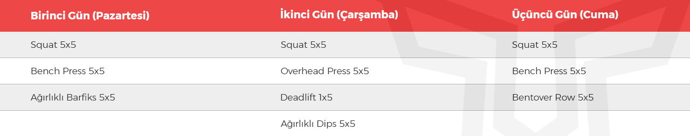

Eğer amacınız kilo alarak kas geliştirmek ise, yapmanız gereken sapasağlam bir antrenman ile beraber bolca beslenmek.
Aşağıda fitness beslenme tavsiyeleri bulunuyor, hatta adım adım ihtiyacınız olan tüm hesaplayıcılarla beraber kendi planınıza ulaşabilirsiniz.
Özetle:
Sağlam antrenman, bilinçli ağırlık çalışması,
Çok sıkı yemek, zorlansak bile bol bol yemeye çalışmak.
Eğer amacınız hem yağlarınızı yakmak, hem de büyümek ise yine, yine sapasağlam bir ağırlık çalışması yapmanız lazım.
Ağırlık çalışmak vücuda hormonal olarak tüm uyarıları verecektir.
Bunun yanında kalori açığını artırmak için kardiyo yapmalı ve diyetimizi de ortalama tutmalıyız. Çok aç kalmak da çok fazla yemek de iyi bir seçenek değil.
Yağ yakarken kas yapmalısınız!
5×5 Full Body Antrenman Programı, en hızlı kas yapma, yağ yakma ve vücut geliştirme sonuçlarını sağladığı için Body Assist’ın ve Türkiye’nin en çok uygulanan programı haline geldi.
Omuz günü, kol günü, bacak günü diye bir programlamayı Ağırsağlam’da asla kabul edemeyiz!
Olimpik atletlere bakın: hiçbir atlet, vücudunu vücut parçalarına göre çalışmaz! Maksimum gücü, kuvveti, hızı ve estetiği temsil eden bu sporcular hareket modellerine göre çalışırken, siz neden böylesi bilinçsiz bir modeli tercih edesiniz?
Görmek için yukarıdaki günlere tıklayınız.
Hayalindeki vücuda ulaşmak hiç bu kadar kolay olmamıştı.